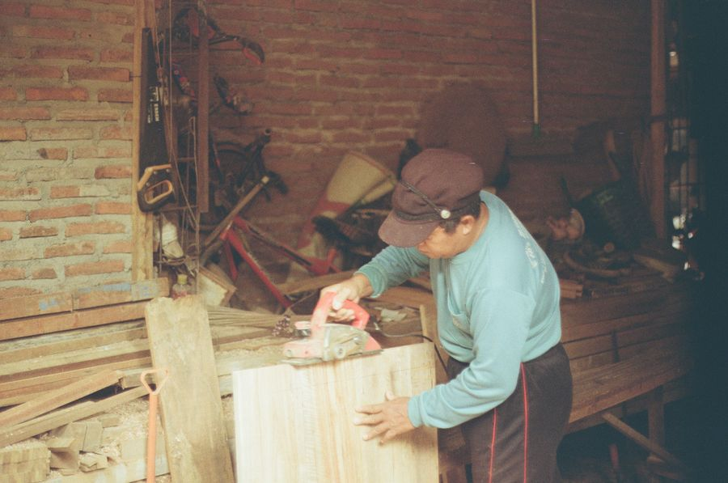

你不知道的德国 · 34
🎓 不上大学
也能有好工作？
Duale Ausbildung · 企业 + 职校 · 2–3,5 年
🧩 两个学习地点
双元制（duale Ausbildung）的「双元」，指的是两个学习场所：企业（Betrieb）和职业学校（Berufsschule）。
大致分配是：约七成时间在企业实际干活，三成时间在职校学理论和常识课（德语、社会、经济）。
📅 学徒的一周常常是「上三天班 + 两天学校」，或者「上班几周 + 集中上几周课」。所以德国街头白天能见到穿工装、背书包的年轻人——他们既不是学生，也不是正式员工。
🇩🇪 Auf Deutsch
Bei der dualen Ausbildung lernt man an zwei Orten: im Betrieb und in der Berufsschule – etwa 70 Prozent Praxis, 30 Prozent Theorie.
💰 学徒是有工资的
这是双元制最特别的地方：学徒不是交学费，而是拿工资（Ausbildungsvergütung），由企业支付。
金额按行业和年份不同，一般是第一年每月七八百欧，逐年递增，第三年常能到一千欧以上。此外还有法定最低标准。
💶 也就是说，德国年轻人 16–18 岁开始学手艺，一边学一边挣钱、还不用交学费。很多人第一次拿到的工资单，就是这张 Ausbildungsvergütung。
🇩🇪 Auf Deutsch
Auszubildende bekommen eine Ausbildungsvergütung vom Betrieb – im ersten Jahr oft 700 bis 900 Euro, danach steigt sie jährlich.
📜 结业证书全国通用
学制通常 2 到 3,5 年，结束时参加结业考试（Abschlussprüfung），由工商会（IHK）或手工业行会（HWK）主办。
拿到证书就是国家承认的职业资格，在全德甚至欧洲范围内有效——这张纸的分量，不比一纸本科学历轻。
🏅 德国的「师傅」头衔（Meister）是另一条上升通道：拿到师傅资格后可以自己开业、带学徒，社会地位很高，很多行业里比大学文凭更「硬」。
🇩🇪 Auf Deutsch
Die Ausbildung dauert meist 2 bis 3,5 Jahre und endet mit einer Abschlussprüfung vor der IHK oder HWK. Der Abschluss ist staatlich anerkannt.
🎯 三百多种职业
德国目前有三百多个国家承认的培训职业，从机电一体化技师、工业文员，到面包师、理发师、银行职员、媒体设计师。
有些职业「双元制」是唯一路径——你想在德国当理发师或面包师，几乎必须走这条路。
🍞 在德国，面包师（Bäcker）是要正式学三年的职业，不是随便进店打工。这解释了为什么德国面包店的水平如此稳定——背后是一套完整的职业培训制度。
🇩🇪 Auf Deutsch
In Deutschland gibt es über 300 anerkannte Ausbildungsberufe – vom Mechatroniker bis zum Bäcker oder Bankkaufmann.
📊 一半年轻人的选择
德国每年有几十万年轻人进入双元制；从整体看，走职业教育路线的人数和上大学的规模相当，社会并不认为「没上大学」是失败。
毕业后可以留下工作，也可以继续往上读：师傅（Meister）、技术员（Techniker）、甚至进应用科学大学（FH）拿学位。
🔄 这套制度还有个隐形作用：它把「学历焦虑」摊薄了。在德国，一个熟练的电工师傅收入和社会尊重，常常不低于办公室白领——这也是双元制能长期存在的原因。
🇩🇪 Auf Deutsch
Etwa die Hälfte eines Jahrgangs beginnt eine duale Ausbildung. Danach sind Meister, Techniker oder ein Studium möglich – Bildung ist kein Einbahnweg.
🤝 为什么企业愿意出钱
企业付工资、花时间带学徒，图什么？答案很实际：这是最可靠的招人渠道。企业自己培养出来的人，懂流程、认文化，多数毕业后会留下来。
所以双元制的岗位也不是白给的：申请要看成绩、要面试、好多岗位竞争激烈，好企业（比如大厂、银行、保险）尤其难进。
📄 想在德国走双元制，得写正式的求职信（Bewerbung）：简历、动机信、成绩单一样不少。16 岁的学徒申请，流程和白领求职是同一套——德国式认真的又一例。
🇩🇪 Auf Deutsch
Für Betriebe ist die Ausbildung die zuverlässigste Quelle für Fachkräfte. Deshalb sind die Plätze begehrt – eine Bewerbung ist Pflicht.
📖 想读更多德国冷知识？
34 期「你不知道的德国」深度专栏，都在 Leon 德语学习中心。
📚 进入网站